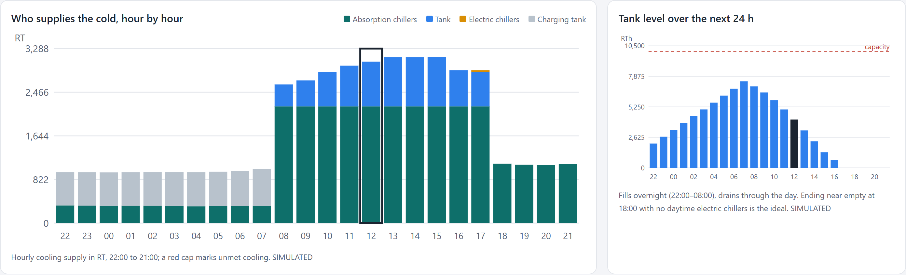
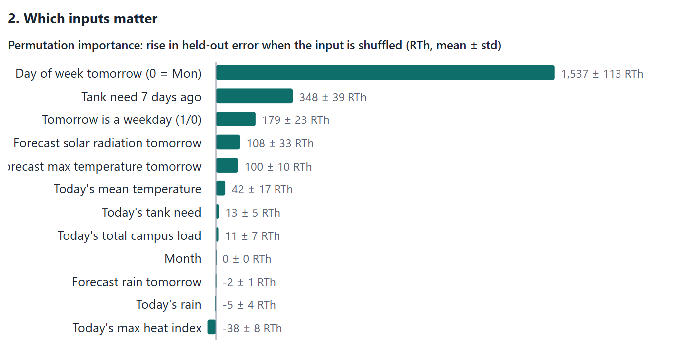
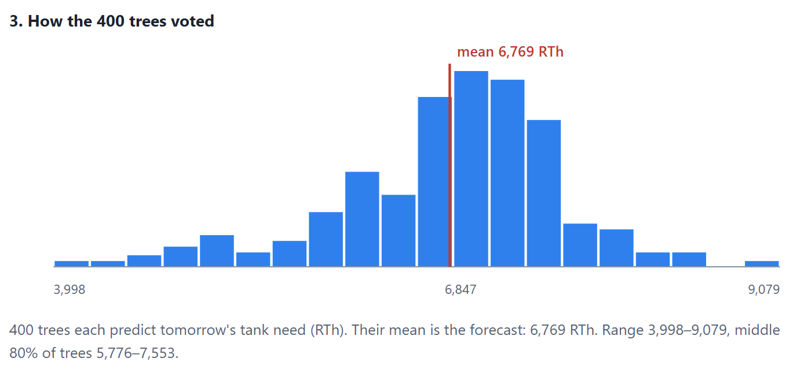
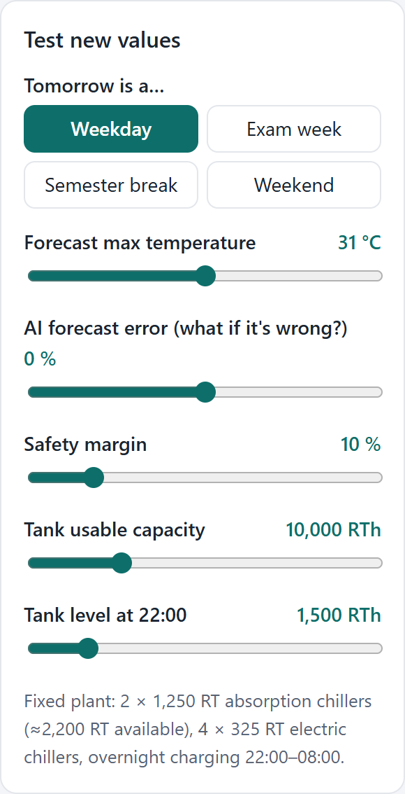
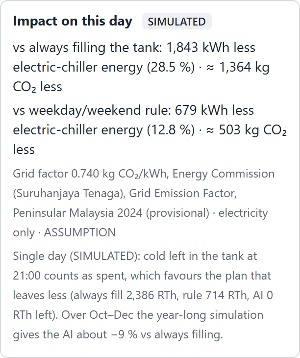
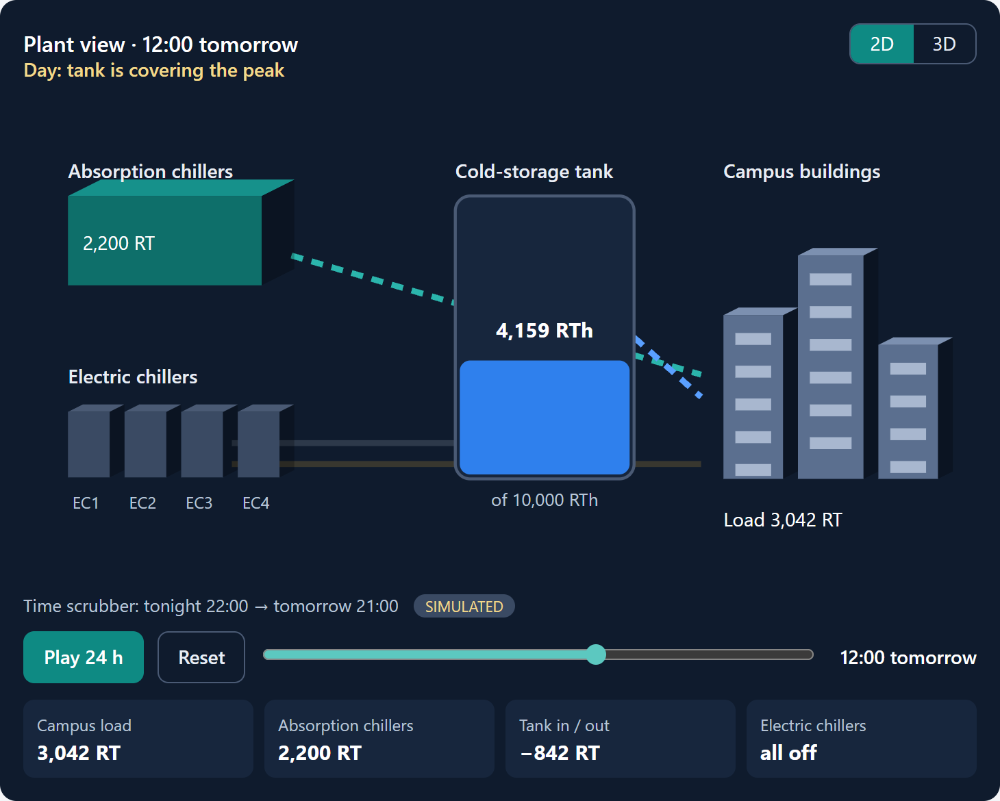
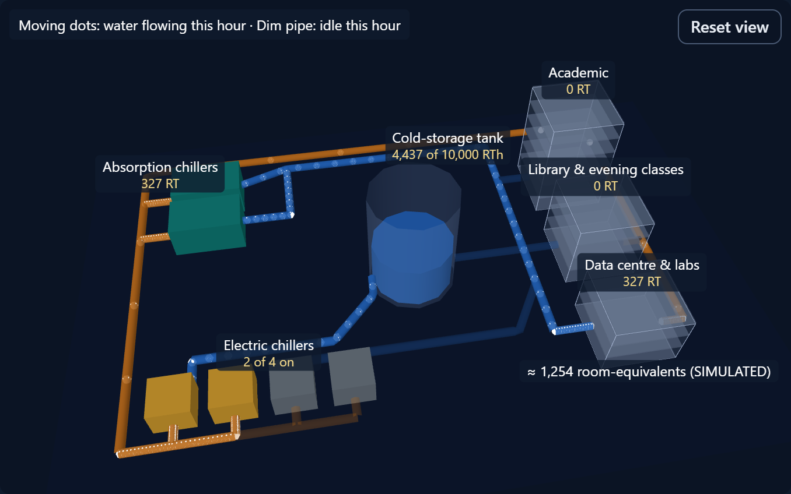
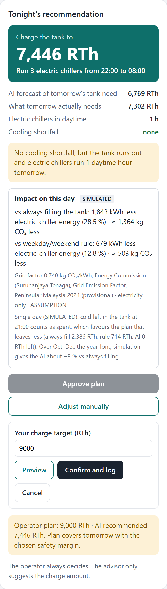
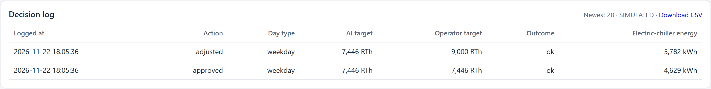

7. Read the charts and the comparison table


A study note: the problem, the solution, the Random Forest, how to run it, and what every file does
SIMULATED prototype TEB2023 Artificial Intelligence · 23 November 2026 · for classmates and the lecturer
Summary. A university campus is cooled by a gas district cooling plant. Every night an operator must decide how much cold to store in a big insulated tank, so that tomorrow's afternoon peak is served by the tank and by free waste-heat chillers instead of expensive electric chillers. Store too much and electricity is wasted. Store too little and electric chillers must run at the daytime peak. The Smart Cooling Advisor is a small web app that forecasts tomorrow's need with a Random Forest (a machine-learning model made of many decision trees), adds a safety margin, and proposes a charge target. The operator approves it or types their own number: the operator always decides. Everything runs on one laptop, on real 2024 weather for Seri Iskandar and a synthetic campus load. There is no real UTP plant data, so every energy number in this note is SIMULATED.
| Section | Question it answers | Read it if you want to… |
|---|---|---|
| 1 | What is the problem? | understand district cooling and the nightly decision |
| 2 | What is our solution? | see the features and the headline results in two minutes |
| 3 | How does it work? | explain the data pipeline and the Random Forest in your own words |
| 4 | How do I operate it? | install, run and use the dashboard, with three worked scenarios |
| 5 | What does each code file do? | find your way around the repository |
| 6 | Back matter | check limitations, look up a term, find further reading |
| Label | Meaning in this project |
|---|---|
| SIMULATED | Output of our model plus our assumptions: the synthetic campus load, the simulated day-ahead weather forecast, and every energy, tank and plant number. |
| MEASURED | Real 2024 weather, and the heat-class classifier accuracy (section 3b, part 8). |
| ASSUMPTION | A value we chose: exam (0.9) and semester-break (0.35) multipliers, the split into three campus blocks, the plant parameters, and the grid factor 0.740 kg CO2 per kWh. |
| PROPOSED | The advisor and its approve/adjust workflow. It is a design, not something in use at UTP. |
Technical terms (Random Forest, RT, RTh, kWh, MAE and others) are defined where they first appear and again in the glossary at the end.
District cooling means one central plant makes chilled water and pipes it to many buildings, instead of every room having its own air conditioner. A Gas District Cooling (GDC) plant is run on gas: a gas turbine makes electricity, and its hot exhaust (waste heat) is used instead of being thrown away. UTP's plant is the real-world setting for this project. The parts that matter to us are:
At 22:00 each evening the operator chooses how full to charge the tank by morning. The tank is then drained from 08:00 to 21:00 to cover whatever the absorption chillers cannot supply. This choice has a cost on both sides.
Why it is hard. Tomorrow's need depends on the weather (hotter and sunnier means more cooling) and on the kind of day: a weekday, a weekend, an exam week, or a semester break when the campus is nearly empty. The operator needs a number, tonight, for a day that has not happened.
The Smart Cooling Advisor is a web dashboard on localhost. Each evening it (1) forecasts tomorrow's tank need, (2) adds a safety margin (10 % by default), and (3) proposes a charge target. The operator can Approve the target or Adjust it to their own number. The advisor only suggests PROPOSED.
The fair test is a full season. The year-long plant simulation for October to December 2024 (code-pack step 5, output file scs/data/plant_results.csv) counts the electric-chiller energy used under each way of choosing the nightly charge:
| Way of choosing the charge | Electric-chiller energy, Oct–Dec |
|---|---|
| Always fill the tank | 373.7 MWh |
| Weekday/weekend rule (fixed amount by day of week) | 346.4 MWh |
| AI forecast (+10 % margin) | 338.9 MWh |
| Perfect forecast (the best anyone could do) | 336.5 MWh |
That is about −9 % for the AI against always filling and about −2 % against the weekday/weekend rule (README). (MWh is 1,000 kWh.) The AI recovers most of what a perfect forecast could save.
scs/data/seri_iskandar_2024_openmeteo.csv). A heat index (how hot it feels, from temperature and humidity) is added.A Random Forest is a machine-learning model that predicts a number by asking many simple questions many times and averaging the answers. We start with one tree.
A decision tree predicts by asking yes/no questions about the input, each answer leading to the next question, until it reaches a final box (a leaf) holding a number. For our task the question game goes like this:
A tree can keep asking questions until each leaf holds a handful of days. It then memorises the quirks of the training days, including pure chance. This is overfitting. Its predictions are very sensitive to which days it happened to see: change the training data slightly and the tree changes a lot. This sensitivity is called variance. Our own forest shows it: for the default day, the first tree on its own predicts 7,762 RTh, while the whole forest predicts 6,769 RTh.
_rf() in app/model.py) does not set max_features, and scikit-learn's default for a regression forest, in the installed version 1.6.1, is to consider all 12 features at every split. Our trees differ because of the bootstrap alone.At each node the tree tries many questions (“is feature < value?”) and keeps the one that makes the two resulting groups as pure as possible: days inside one group should have similar tank needs. Purity is measured as variance, the average squared distance from the group's mean (this is the mean squared error, MSE, the scikit-learn setting squared_error). The best question gives the smallest size-weighted variance of the two groups.
| Candidate split (left | right) | Left mean | Right mean | Weighted variance |
|---|---|---|---|
| after day 1: 1 | 5 days | 3,000 | 5,780 | 3,341,333 |
| after day 2: 2 | 4 days | 3,100 | 6,425 | 1,957,917 |
| after day 3: 3 | 3 days (chosen) | 3,233 | 7,400 | 74,444 |
| after day 4: 4 | 2 days | 4,175 | 7,600 | 1,807,917 |
| after day 5: 5 | 1 days | 4,820 | 7,800 | 3,181,333 |
Splitting between the cool days and the hot days drops the variance from 4,414,722 to 74,444, the best of all candidates, so the tree asks that question. It then repeats the process inside each group until a group would have fewer than 3 days (the min_samples_leaf=3 rule). A leaf predicts the mean of its days.
From app/model.py (_rf, build_features, train_forecasters): RandomForestRegressor(400, min_samples_leaf=3, random_state=42, n_jobs=-1). That is 400 trees, at least 3 days per leaf (a guard against overfitting), a fixed random seed 42 (so results repeat), and use of all CPU cores. The target is tomorrow's tank need in RTh. The 12 input features, with FEATURE_PROVENANCE recording where each comes from:
| Feature | Plain meaning | Where it comes from |
|---|---|---|
need_today | Tank need of the day just finished (RTh) | observed, 1 day lag |
load_today | Total campus load over the last 24 h to 21:00 (RT·h) | observed, 1 day lag |
tmean_today / himax_today | Mean temperature / highest heat index over that window (°C) | observed, 1 day lag |
rain_today | Rain over that window (mm) | observed, 1 day lag |
need_lastweek | Tank need 7 days ago (RTh) | observed, 7 day lag |
dow_tomorrow, weekday_tomorrow, month | Day of week (0 = Monday), weekday yes/no, month | calendar |
fc_tmax, fc_sw, fc_rain | Tomorrow's forecast max temperature, solar radiation, rain | simulated day-ahead forecast |
The “simulated day-ahead forecast” is the observed weather of that day plus random error (max temperature σ = 1 °C, solar ±15 %, rain ±50 %; dry days known exactly), SIMULATED. Real forecasts are worse. Without it the Oct–Dec error rises from about 400 to about 550 RTh (README).
GET /explain: the AI's held-out MAE is 404.6 RTh (8.8 % of the mean need of 4,602 RTh, README), against 966.8 RTh for the weekday/weekend rule.For the default scenario the source day is 2 Oct 2024 (a Wednesday, 31 °C), forecast by the Jan–Sep model. GET /explain?source_date=2024-10-02 returns:

dow_tomorrow is far ahead (+1,537 RTh), then need_lastweek (+348), weekday_tomorrow (+179), fc_sw (+108) and fc_tmax (+100). Tiny or negative values (e.g. himax_today, −38) mean shuffling changed nothing real.dow_tomorrow 0.617, need_lastweek 0.180, weekday_tomorrow 0.115. They differ from permutation importance because impurity is measured on the training days (and favours inputs with many possible split points, such as tmean_today, 0.029 impurity but only +42 RTh by permutation), while permutation is measured on unseen days.
One tree's path (part 4 of the card): the first 5 of tree 0's 8 questions for this day, from GET /explain. The tree ends at 7,762 RTh, far from the forest's 6,769 RTh.
| # | Question asked | Day's value | Answer | Days in node |
|---|---|---|---|---|
| 1 | Day of week ≤ 4.5? (is it Mon–Fri) | 2 | yes (≤) | 168 |
| 2 | Today's max heat index ≤ 38.1 °C? | 35.8 | yes (≤) | 122 |
| 3 | Forecast solar radiation ≤ 4,172? | 5,774 | no (>) | 65 |
| 4 | Today's mean temperature ≤ 26.8 °C? | 25.6 | yes (≤) | 40 |
| 5 | Tank need 7 days ago ≤ 6,648 RTh? | 7,098 | no (>) | 19 |
Separate from the forecast, the code pack's step 1 trains a Random Forest classifier (it picks a category, not a number) that predicts the heat class three hours ahead: Low (heat index below 27 °C), Medium (27 °C and above) or High (32 °C and above). It uses 9 weather and time inputs, 300 trees and the same train-on-Jan–Sep, test-on-Oct–Dec split. Its accuracy is 0.788, MEASURED on real 2024 weather. It is shown in the app's explanation payload and README, but it does not feed the tank forecast.
charge target = min( tank capacity, forecast × (1 + forecast error) × (1 + safety margin) )
The “forecast error” slider (default 0 %) is a what-if: “what if the AI is 20 % too low?”. Example, default day: 6,769 × 1.10 = 7,446 RTh (build_response in app/recommend.py).
dispatch_day in app/plant.py steps through the 24 hours from 22:00 to 21:00. In each hour (function _hour_step):
A unit test confirms the balance every hour: absorption + tank + electric + unmet equals campus load, and the tank change equals 0.95 × charge − discharge − standby loss (tests/test_energy_balance.py).
For the same scenario day the app dispatches the plant three ways: always fill (target = tank capacity), the weekday/weekend rule (the average past need for that day of week, plus the margin) and the AI forecast. The impact block reports the AI's saving against each baseline: energy saved = baseline kWh − AI kWh, and CO2 = energy × 0.740 kg CO2/kWh (Energy Commission, Peninsular Malaysia 2024, provisional: an ASSUMPTION, electricity only).
Open PowerShell in the repository folder (smart-cooling-advisor), then (from README.md):
python -m venv .venv .venv\Scripts\activate pip install -r requirements.txt playwright install chromium # only for browser tests and screenshots python -m uvicorn app.main:app
Open http://127.0.0.1:8000. The README gives a cold start of about 15–20 s, because the app trains the forecasters first (the first run also builds a cached load file in data/); on a slower machine it can take longer, and a test requires it to finish in under 60 s. If port 8000 is busy, either stop the other program or pick another port: python -m uvicorn app.main:app --port 8001 and open that port instead.

Weekday, Exam week, Semester break or Weekend. The app replays the nearest real 2024 day of that type.
Forecast max temperature (24–38 °C), AI forecast error (−30 to +30 %), safety margin (0–60 %), tank capacity (5,000–25,000 RTh) and tank level at 22:00. Each change asks the server for a new plan within a moment. Changing any control also clears a manual override.
The teal box gives the charge target and the number of electric chillers to run between 22:00 and 08:00. Below it: the AI forecast, what tomorrow actually needs, daytime electric-chiller hours (zero is the goal) and cooling shortfall (“none” is the goal), then a coloured status note.
Energy and CO2 against the two baselines, plus the one-day caveat. It always describes the AI plan, even while you preview your own number.


Drag the scrubber to any hour from tonight 22:00 to tomorrow 21:00, or press Play 24 h (stops at 21:00; Reset returns to 12:00). The tiles show campus load, absorption output, tank in/out and electric chillers for that hour. Electric chillers turn amber when they run.
Press 3D (needs WebGL). Orbit by dragging, zoom with the scroll wheel, press Reset view to come back. Hover any part to see its name and live value. The idle key in the corner reads: “Moving dots: water flowing this hour · Dim pipe: idle this hour”. The three blocks (Academic, Library & evening classes, Data centre & labs) are an ASSUMPTION.


The collapsible card below the charts (section 3b, part 7). It explains the forecast for the source day before the error slider is applied.
Approve plan accepts the AI target and writes one log row. Adjust manually opens a box: type your own charge target (0 up to capacity), press Preview to re-run the day (charts, plant view and an “Operator plan” note switch to your number; the AI recommendation and table stay), then Confirm and log (disabled until you have previewed) or Cancel. Nothing is logged by moving sliders or previewing.


GET /decisions.csv) saves the whole file.Rows are stored in data/decision_log.csv (git-ignored). The server recomputes the plan itself before writing, so numbers typed in the browser never reach the log.
All values below were read from the running API (POST /recommend) with the default margin (10 %), capacity (10,000 RTh) and level (1,500 RTh). The source day is the real 2024 day the app replays.
| Hot weekday | Cool weekday | Semester break | |
|---|---|---|---|
| Set | Weekday, 34 °C | Weekday, 29 °C | Semester break, 31 °C |
| Source day | 23 Oct 2024 (33.2 °C) | 19 Nov 2024 (29.0 °C) | 2 Oct 2024 (31.0 °C) |
| AI forecast / actual need | 8,390 / 8,128 RTh | 6,624 / 5,623 RTh | 6,769 / 0 RTh |
| AI charge target | 9,229 RTh | 7,286 RTh | 7,446 RTh |
| Daytime electric-chiller hours (AI) | 0 | 0 | 0 |
| Electric-chiller energy: always fill / rule / AI | 6,479 / 5,412 / 5,936 kWh | 6,432 / 5,274 / 4,397 kWh | 6,472 / 5,308 / 4,599 kWh |
| Left in tank at 21:00: fill / rule / AI | 1,577 / 0 / 848 RTh | 4,014 / 2,340 / 1,448 RTh | 9,454 / 7,783 / 7,040 RTh |
/explain, a malformed date gives 422 and a day without a forecast gives 404.data/.pytest -q runs everything including the browser tests; pytest -q -m "not e2e" skips the browser tests.The project has three layers: the untouched original code pack (scs/), the backend that wraps it (app/), and the browser page (static/), plus tests, scripts and docs.
Top-level files describe the project and its Python environment.
| File | What it does | Key parts | Used by |
|---|---|---|---|
| README.md | Project overview: install, run, test, features, labels, honesty notes | season results, hot-weekday note | readers; checked by tests/test_readme.py |
| README_START_HERE.md | Original hand-over note for the start folder | how to begin with Claude Code | readers |
| requirements.txt | Pinned Python packages | fastapi, uvicorn, pydantic, pandas, numpy, scikit-learn, httpx, pytest, ruff, playwright | pip |
| pyproject.toml | pytest and ruff settings | markers slow, e2e; line length 100 | pytest, ruff |
| .gitignore | Files git should skip | .venv, caches, data/campus_load_*.csv, data/decision_log*.csv | git |
| Smart_Cooling_Advisor_plant_dashboard_sketch.pdf | The approved UI sketch the page follows | page 1 dashboard (page 2 phone alert not built) | design reference |
Earlier course work: a step-by-step pipeline from weather to a plant simulation. Our app reuses only the parts imported through app/legacy: step1_model, step2_simulate and step5_plant. The rest is reference only.
| File | What it does | Key functions/parts | Used by |
|---|---|---|---|
| README.md | Run order of the steps and data source | — | readers |
| step1_model.py | Heat index, heat classes, 3-hour-ahead Random Forest classifier, baselines | load_openmeteo, heat_index_c, add_features, FEATURES | app/model.py (reused) |
| step2_simulate.py | Energy simulation of one 60 m² room with two air conditioners | PARAMS, simulate, schedule | step5 (reused via it) |
| step3_sensitivity.py | Do the room-level conclusions flip if assumptions change? | VARIANTS, tou_cost | reference only |
| step4_scenarios.py | Where could a 3-hour forecast add value (pre-cooling, peak shifting)? | make_schedule, scenario3 | reference only |
| step5_plant.py | Plant-level model: synthetic campus load, daily table, forecasts, hourly dispatch, KPIs | PLANT, campus_load, daily_table, ec_power_kw, dispatch | app/model.py, scenario.py, plant.py (reused) |
| step6_plant_sensitivity.py | Plant sensitivity, hot season, noisy load | run_case | reference only |
| step7_extra_cases.py | Extra cases: 20,000 RTh tank, 40 % margin with noise | script producing the extra-cases CSV | reference only |
| app.py | Original Streamlit room-level prototype (not our app) | load, heat-class advice | reference only |
| requirements.txt | Code pack's own package list | — | pip (optional) |
| data/ (10 CSV files) | As a group: the 2024 Open-Meteo weather file (used by the app) and result tables written by the steps (predictions, results, sensitivity, scenario and plant results) | seri_iskandar_2024_openmeteo.csv, plant_results.csv | app/config.py; other steps |
A FastAPI service. At startup it builds a “DayBank” (weather, synthetic load, daily table, trained forecasters) once; each request then looks up a day, dispatches the plant three ways and returns JSON.
| File | What it does | Key functions/parts | Used by |
|---|---|---|---|
| __init__.py | Empty; marks app as a package | — | Python |
| config.py | Paths, plant presets, day-type multipliers, grid factor | get_params, PRESETS, DAY_TYPE_MULTIPLIERS, GRID_EMISSION_KG_PER_KWH | all app modules |
| legacy/__init__.py | The only import path into scs/ (adds it to sys.path) | step1_model, step2_simulate, step5_plant | model.py, plant.py, scenario.py |
| model.py | Weather, heat-class classifier, cached campus load, features, forest training | load_weather, train_classifier, campus_load_frame, build_features, _rf, train_forecasters | scenario.py, explain.py |
| scenario.py | Builds the DayBank; picks the nearest real day; builds one scenario | build_day_bank, select_day, build_scenario | main.py, recommend.py |
| plant.py | Pure hour-by-hour plant physics | dispatch_day, _hour_step, summarise_day, dispatch_year | recommend.py; tests |
| recommend.py | Assembles the /recommend response: three strategies, impact, messages | build_response, impact_line, _message | main.py |
| schemas.py | Pydantic request and response models with range checks | RecommendRequest, DecisionRequest, RecommendResponse | main.py |
| decisions.py | CSV decision log with locking and header-mismatch rotation | DecisionLog, decision_row, COLUMNS | main.py |
| explain.py | Random-forest explainer: importances, held-out MAE, tree votes, one path | compute_explain_stats, explain_day, FEATURE_INFO | scenario.py, main.py |
| main.py | FastAPI app, startup (lifespan) and the endpoints below | see list | uvicorn |
Endpoints in main.py: GET /health (status), POST /recommend (the plan), POST /decisions (log an approved or adjusted plan), GET /decisions (newest-first rows as JSON), GET /decisions.csv (download), GET /explain?source_date=YYYY-MM-DD (the AI explanation), and / (serves the static page).
Plain HTML, CSS and JavaScript with no build step. Every number shown comes from the API.
| File | What it does | Key functions/parts | Used by |
|---|---|---|---|
| index.html | Page structure: controls, plant card, recommendation, charts, explainer, log | import map for Three.js; loads the scripts | browser |
| styles.css | Layout and colours | CSS variables | index.html |
| app.js | Main logic: reads inputs, calls /recommend, draws 2D plant, charts, table, impact; approve/adjust | fetchRecommendation, render, drawPlant, drawSupply, postDecision | index.html |
| decisions.js | Fills the decision-log table from /decisions | refresh | index.html, app.js |
| explain.js | Draws the “How the AI decided” card from /explain | renderImportance, renderHist, renderPath | index.html |
| plant3d.js | 2D/3D toggle, labels, tooltip, live state; falls back if no WebGL | setMode, applyState | index.html |
| plant3d-scene.js | The Three.js scene: chillers, tank, blocks, pipes, particles | createScene | plant3d.js |
| vendor/three/ | The third-party Three.js r170 library, MIT licence, kept offline (no CDN) | three.module.js, OrbitControls | plant3d-scene.js |
Tests prove that the physics balance, the forecaster does not leak, the API validates input and the browser page behaves. Run them with pytest.
| File(s) | What it proves |
|---|---|
| Backend (unit) | |
| conftest.py, __init__.py | Shared fixtures (parameters, DayBank, test client); package marker. |
| test_config.py, test_campus_load.py | Default preset equals the code pack's; the cached load matches step 5, bad caches are rebuilt, no weekend room load. |
| test_model_step1.py, test_forecasters.py | Heat index matches the NWS table; classifier trained Jan–Sep and scored Oct–Dec; features use only hours before 22:00; test months never trained on. |
| test_scenario.py, test_blocks.py | Day-selection rules, 22:00–21:00 profile; the three blocks sum to the campus load. |
| test_plant_dispatch.py, test_energy_balance.py | Charge only by night, discharge only by day, hourly supply equals load, tank change formula, regression against step 5 results. |
| test_recommend.py, test_impact.py, test_operator_plan.py | Targets, flags and messages; kWh and CO2 saved match the table and ignore overrides; an override creates an operator plan. |
| test_readme.py | README, screenshots and the guide PDF exist; the guide has 4–9 pages. |
| API | |
| test_api.py | Health, response shape, 422 on bad input, all-finite sweep, cold start under 60 s, Three.js served. |
| test_decisions.py, test_explain.py | Log rows use server numbers, 422 rules, rotation, concurrent appends; the tree mean equals the forecast, the path is real, held-out months are never trained on. |
| Browser (e2e) | |
| test_frontend_e2e.py | Playwright tests of the page: renders from the API, stale responses, Play, approve/adjust/log, explainer, 3D view, no-WebGL fallback. |
| File | What it does |
|---|---|
| scripts/screenshots.py | Starts the app on port 8765 and captures the README screenshots; its guide mode captures the per-panel crops in docs/guide/img. (Key parts: shoot, shoot_guide, main.) |
| scripts/build_guide_pdf.py | Prints the HTML user guide to docs/user_guide.pdf with Chromium (count_pages, main). |
| scripts/build_study_note_pdf.py | Prints this study note to docs/study_note.pdf by the same method. |
| docs/user_guide.pdf, docs/guide/ | Illustrated walkthrough of the dashboard (PDF, HTML source and images). Also docs/screenshots/: README images. |
| docs/Smart_Cooling_Advisor_findings.pdf | Written findings of the project. |
| docs/superpowers/, docs/plan.md | Design specs and implementation plans for each build stage. |
| docs/PROMPT_mvp.md, PROMPT_ui.md, PROMPT_study_note.md | Prompts used to build the MVP, the UI and this note. |
| docs/study_note/, docs/study_note.pdf | This note: HTML source, images and the PDF. |
POST /recommend request. The dotted line means scenario.py reads the forecasts and load that model.py built once at startup. explain.js and decisions.js make their own GET calls.app/model.py, app/explain.py. Plant physics: app/plant.py, scs/step5_plant.py.app/recommend.py. Day selection: app/scenario.py.docs/user_guide.pdf. Design reasoning: docs/superpowers/specs/. Season results: scs/data/plant_results.csv, scs/data/plant_sensitivity.csv.